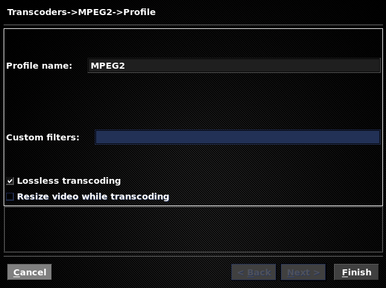

I’m doing a series of posts here on automated transcoding of recordings in MythTV. The idea is to explain the basics, then evolve the design to end up with recordings suitable for playback on the iPad, which is a little more advanced.
- The complete series of articles is available at this page
Last time I enabled transcoding on the back-end server, and showed that hitting the Transcode button in MythWeb fired off a job. Today I’m going to show what that job is doing.
If you have the MythTV Frontend running then you’re all set to begin. Otherwise, log into your MythTV box and start the Frontend application (these are instructions for 0.24):
workstation:~$ ssh -Y mythtv.example.com mythtv:~$ mythfrontend --windowed --geometry 640x480
Navigate to Utilities/Setup, Setup, TV Settings, General, and hit Next until you end up on the General (Jobs) screen:
") First settle your eye on the Default transcoder option in the centre of the screen. There are a number of predefined Transcoders (which we’ll come to shortly), and this is where you choose the one to be run when the Transcode button is pushed in MythWeb.
First settle your eye on the Default transcoder option in the centre of the screen. There are a number of predefined Transcoders (which we’ll come to shortly), and this is where you choose the one to be run when the Transcode button is pushed in MythWeb.
Below this option are tick boxes for each kind of Job that we saw in my last blog post. Whereas before we simply permitted them to be run manually, or not, these options control whether this is done automatically. However this applies to newly created Recording Schedules only. For example if you already have a Schedule for a TV series, new episodes won’t be auto-transcoded, we need to fix each existing Schedule, and I’ll show how to do that below.
Now we know where to choose the default Transcode profile and enable automatic transcoding for new recordings, let’s look at these mysterious profiles. Navigate to Utilities/Setup, Setup, TV Settings, Recording Profiles, Transcoders to end up on this screen:
 You might have spotted that two profiles are called Autodetect from…, and indeed these are used when the Default transcoder we saw above is set to Autodetect. Selecting the Autodetect from MPEG2 profile shows it’s quite simple:
You might have spotted that two profiles are called Autodetect from…, and indeed these are used when the Default transcoder we saw above is set to Autodetect. Selecting the Autodetect from MPEG2 profile shows it’s quite simple:
So why have a profile which seems to do nothing? Two reasons:
- If you have previously run a Commercial-detection Job, the cutpoints for ad breaks will be stored, and the in-place transcode is an opportunity to remove those sections of the video.
- Sometimes MPEG recordings can contain “glitches” or MythTV has trouble seeking within the video; an in-place transcode is an opportunity to rebuild all the metadata, which helps resolve problems.
It’s for the second reason that I have automatic in-place transcoding enabled even though I don’t use commercial detection. If you want to transcode to save disk space, take a look at the other Transcoders available, and consider either setting one to be the Default transcoder or creating your own.
All that remains is for me to fix the automatic transcode setting for my existing recordings, to be in line with new recordings. The only way I know is by editing the backend database directly, but this is strongly discouraged by the MythTV developers. Anyway, at the mysql prompt (get the password from /etc/mythtv/mysql.txt):
mythtv:~$ mysql -u mythtv -p mythconverg Enter password: mysql> update record set autotranscode = 1; Query OK, 72 rows affected (0.11 sec) Rows matched: 72 Changed: 72 Warnings: 0
If you want to do the same for Commerical-detection, set the autocommflag field.
Next time I’ll take a break from MythTV and look at how to transcode an MPEG2 file for the iPad using command line tools.
Thanks for the nice walk-through. Is on-the-fly transcoding also possible for videos (ripped DVD or downloaded), i.e., somewhere in the MythVideo settings? Or only for TV recordings?
Sorry, I’ve no idea, as I’ve never tried this. Best place to ask is probably the mythtv-users mail list.